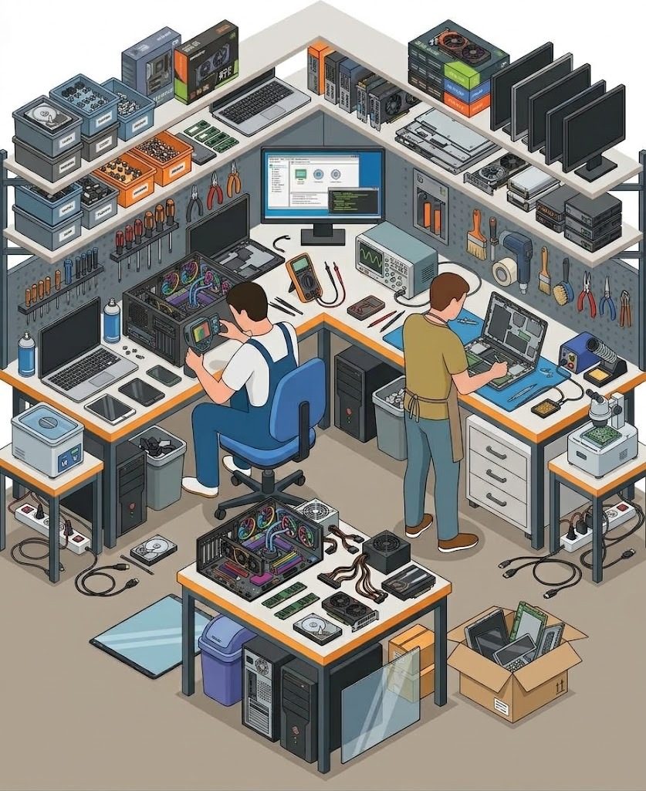
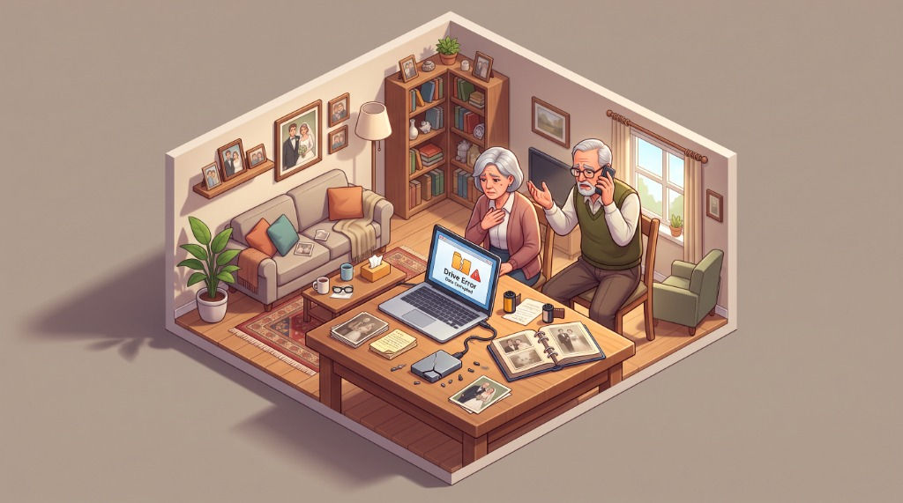
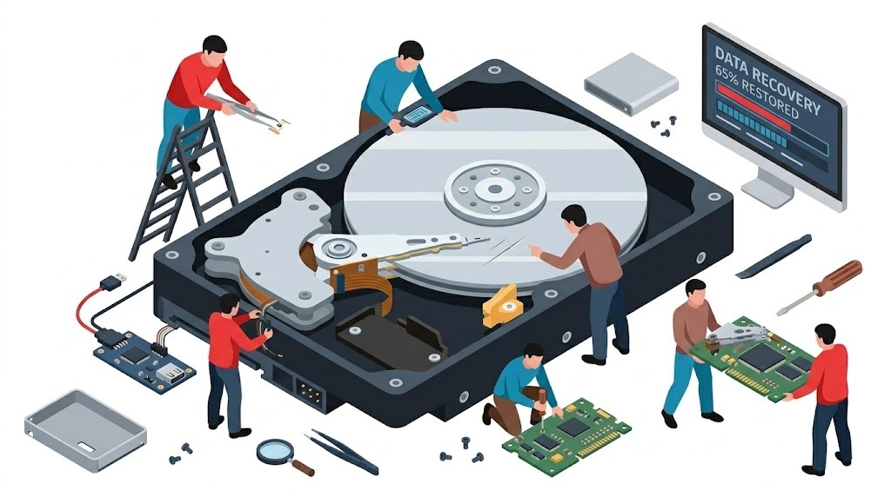

Hard Drive, SSD & External Drive Data Recovery Brisbane
Family photo albums, accounting books, or research thesis trapped on a clicking hard drive, dropped external drive, or dead NVMe SSD? We specialize in hardware write-block imaging, PCB diode micro-soldering, and forensic file extraction across Greater Brisbane. Don't pay $2,500+ to corporate cleanroom franchises when our local lab rescues your data affordably.

Forensic Storage Diagnostics & Direct Recovery Standards
Unlike general IT providers who plug failing drives into Windows and run destructive scans, our Brisbane bench works with dedicated hardware write-blockers to protect your original media from catastrophic platter wear.
Hardware Write-Blocked Cloning
We never perform recovery on your original drive. We create a cryptographic sector-by-sector clone with write-signals physically disabled.
PCB Power Rail & TVS Diode Rebuilding
Power surge or incorrect 12V adapter plugged into an external drive? We replace blown TVS diodes and transfer adaptive ROM calibration chips.
NAND Controller Bypass & BitLocker Decryption
Retrieving data from dead NVMe SSDs, MacBooks with soldered storage, and encrypted partitions with official TPM/recovery key bypasses.
100% Bench Diagnostic Credit
Your $50–$150 hardware diagnostic fee is credited 100% toward the final recovery. If the platters are scratched and data is lost, no recovery fee applies.
The "Emergency Stop" Protocol: Do This Right Now
Follow these 4 critical rules immediately to prevent irreversible magnetic platter gouging and permanent data destruction.
Disconnect Power Immediately
Yank the USB cable or pull the PC power lead out right away. Do not keep rebooting the machine hoping the drive will magically re-appear.
Do NOT Run Chkdsk or Scan & Fix
Windows prompts like "Do you want to scan and fix this drive?" execute aggressive write operations that overwrite corrupted headers and shred recoverable file chains.
Never Put the Drive in the Freezer
The infamous "freezer trick" causes atmospheric condensation on platters. When thawed, spinning platters throw water droplets into read heads, ripping them clean off.
Transport in Static-Safe Pouch
Wrap the drive securely in bubble wrap or an anti-static pouch to protect delicate bearings and spindle motors during transit to our Brisbane laboratory.

When Decades of Family Photos & Critical Documents Suddenly Vanish
It usually happens in a split second: an external hard drive slips off the coffee table onto the rug, or a laptop displays a dreaded "Drive Error: The disk you attached was not readable by this computer" message. Decades of baby pictures, deceased parents' voices, tax audits, or university degrees seem lost forever.
In moments of panic, people download free recovery utilities from the internet and run them repeatedly. This is the #1 reason data becomes permanently unrecoverable. When drive heads are physically misaligned, every minute of spinning cuts circular scratch grooves into the magnetic substrate, grinding your photos into dust.
💡 Stop powering the drive on. Call us first. In 9 out of 10 cases where drives are turned off immediately, 100% of the photos and documents are safely extracted.
The Anatomy of Hard Drive & SSD Failure
Understanding why storage media breaks down helps us pinpoint the exact microscopic failure and recover data without damaging the underlying media.

Actuator Arm & Read/Write Sliders
In mechanical drives (WD, Seagate, Toshiba), read heads hover just 3 nanometers above spinning platters—closer than the width of a single smoke particle. A physical bump bends the arm, causing the head to slap the platter surface repeatedly ("Click of Death").
High-Speed Magnetic Platters (5400/7200 RPM)
Platters are precision-ground glass or aluminum discs coated in a microscopic magnetic film storing billions of 1s and 0s. Clean bench inspection ensures zero rotational rings or dust contamination before sector imaging.
Controller PCB & TVS Surge Diodes
Plugging an incorrect 12V or 19V laptop charger into a 5V external drive immediately blows the Transient Voltage Suppression (TVS) diodes and zero-ohm fuses. We micro-solder new diodes and swap unique ROM calibration chips to revive the circuit board.
Solid-State NAND Flash & Controllers
Unlike mechanical drives, SSDs have no moving parts. Failures occur when the wear-leveling flash translation layer (FTL) becomes corrupted, or controller power management ICs short out. We bypass dead controllers using safe-mode test points to read raw NAND blocks.
All Storage Media Brands & Form Factors Supported
From antique 3.5" desktop drives to state-of-the-art PCIe 5.0 NVMe SSDs and soldered Apple Silicon flash chips, we possess the tooling and firmware libraries to recover your data.
3.5" & 2.5" Internal Drives
Western Digital (Blue, Black, Red, Purple), Seagate (Barracuda, IronWolf), Toshiba, and Hitachi HGST drives from desktop PCs, laptops, and Synology/QNAP NAS enclosures.
Portable Hard Drives & SSDs
WD My Passport, WD Elements, Seagate One Touch, LaCie Rugged, SanDisk Extreme Portable SSDs, and Samsung T7/T9 drives suffering from broken USB-C ports or dropped impacts.
M.2 NVMe, PCIe & SATA SSDs
Samsung 970/980/990 Pro, Crucial P3/P5, WD Black SN850, Kingston, and SK Hynix drives that fail to detect in BIOS or trigger BSOD WHEA_UNCORRECTABLE_ERROR boots.
Apple Silicon & Monolithic Flash
MacBook Pro and MacBook Air M1, M2, M3, M4 with non-removable soldered NAND flash storage, plus corrupted SD cards and monolithic encrypted USB thumb drives.
Common Storage Symptoms & Our Recovery Strategy
Find your exact drive behavior below to understand what has failed internally and how our laboratory safely extracts your files.
| Observed Symptom | Root Cause | What NOT to Do | Our Laboratory Remedy |
|---|---|---|---|
| 🔊 Rhythmic Clicking or Ticking | Damaged read/write heads unable to read servo tracks; hitting physical head stop. | Never keep powering on. Don't run software scanners. | Actuator head assembly replacement in clean enclosure, followed by sector imaging. |
| ⚡ Completely Dead (No Spin, No LED) | Over-voltage surge blew PCB input TVS diode or charred power traces. | Don't plug into other computers; could short USB ports. | Micro-soldering diode replacement, fuse bridging, and ROM calibration chip transfer. |
| ⚠️ "The disk you attached was not readable" | Corrupt Master Boot Record (MBR), GUID partition table (GPT), or bad sector cluster. | Do NOT click "Initialize" or "Format" in Disk Management. | Sector-by-sector cloning with hardware skip on bad sectors, then rebuilding file tree. |
| 🔒 BitLocker / FileVault Lockout | TPM chip firmware desynchronization or corrupted partition header. | Don't repeatedly enter random guesses; lockouts can trigger wipe. | Forensic BitLocker key extraction via Microsoft account / AD tokens and raw container decryption. |
| 🐌 Computer Freezes When Drive Is Plugged In | Failing sectors causing Windows Explorer to hang while attempting infinite retries. | Don't leave plugged in for hours heating the drive. | Hardware cloner with 20ms read timeout and hardware-level reset commands to isolate bad sectors. |
Fair Upfront Assessment & "No Data, No Fee"
We operate on complete transparency. You never receive a mystery $2,500 bill, and you never pay for recovery unless your files are successfully saved.
$50–$150 Precision Bench Diagnostic (100% Credited Toward Recovery)
Every drive undergoes non-destructive hardware write-blocked assessment, head status testing, and platter inspection. You receive an exact written quote before any recovery begins. If you proceed, your diagnostic fee is deducted 100% from the final repair cost.
Logical File Rescue
Accidental deletion, formatted partitions, corrupted file systems on healthy hardware.
- ✓ Partition table reconstruction
- ✓ RAW sector file signature carving
- ✓ Photo, document & video recovery
- ✓ BitLocker decryption assistance
- ✓ Verified file structure tree
PCB & Firmware Remediation
Burnt external drive boards, power surges, dead NVMe SSDs, and bad sector degradation.
- ✓ TVS diode micro-soldering
- ✓ ROM chip transplant & calibration
- ✓ Hardware write-block cloner mirroring
- ✓ Selective bad sector skipping
- ✓ 100% Diagnostic Fee Credited
Complex Hardware Extraction
Severely clicking drives, dropped mechanical platters, damaged spindle motors, and soldered NAND flash.
- ✓ Donor head assembly matching
- ✓ Microscopic platter inspection
- ✓ Soldered Apple Silicon NAND bypass
- ✓ No Data, No Recovery Fee Guarantee
- ✓ Saves thousands over franchise labs
Recent Data Recovery Rescues in Greater Brisbane
Here is how our Indooroopilly workbench saved critical records for local residents, university researchers, and small businesses.
Dropped 2TB WD My Passport (Clicking)
A client accidentally knocked their external hard drive off their desk onto tiled flooring. The drive made a distinct clicking sound and wouldn't mount on macOS.
Our Action: We powered off the drive immediately, matched a donor head assembly in our clean environment, and cloned 99.4% of the sectors.
Dead Samsung 980 Pro NVMe SSD
A UQ university student faced catastrophic failure 48 hours before their thesis submission date. The laptop froze with a blue screen and BIOS showed "No Boot Device".
Our Action: We diagnosed a shorted 3.3V power rail on the SSD controller, micro-soldered a replacement capacitor, and imaged all research files in 3 hours.
Corrupted Seagate Desktop Drive (MYOB/Xero)
A construction business desktop computer shut down during a storm surge. The internal hard drive clicked twice on startup, spinning down with an I/O device error.
Our Action: We transplanted the adaptive ROM calibration chip to a matched donor PCB, resolving the power surge failure and extracting the complete database.
Data Recovery: Expert Answers
Everything you need to know about drive failures, recovery timelines, and data confidentiality.
What does a clicking sound from my hard drive mean?
Can you recover data from an SSD that is completely undetected?
Does putting a hard drive in the freezer actually work?
How much does data recovery cost in Brisbane?
What is your 'No Data, No Recovery Fee' guarantee?
Is my personal and business data kept completely private?
Servicing All Greater Brisbane Suburbs with Zero Call-Out Charges
Fast mobile pickup or emergency bench drop-off at our Indooroopilly laboratory across all Greater Brisbane regions:
Western Suburbs
Indooroopilly (4068), Toowong (4066), St Lucia (4067), Taringa, Kenmore (4069), Chapel Hill, Graceville, Sherwood, Fig Tree Pocket.
Inner City & Central
Brisbane CBD (4000), Spring Hill, South Brisbane (4101), West End, Fortitude Valley (4006), New Farm (4005), Teneriffe, Milton.
Northern Suburbs
Chermside (4032), Ashgrove (4060), Kelvin Grove (4059), Paddington (4064), Stafford, Nundah, Lutwyche, Everton Park.
Southern & Eastern
Mount Gravatt (4122), Carindale, Coorparoo, Woolloongabba, Kangaroo Point, Bulimba, Hawthorne, Greenslopes.
Stop Powering Your Drive On — Let Us Rescue Your Files Today
Every time a clicking drive or failing SSD attempts to spin up, more magnetic media is destroyed. Bring your drive to our Indooroopilly workbench or book rapid mobile pickup across Greater Brisbane.
Lab Address: Indooroopilly, Brisbane QLD 4068 · Open 7:30am – 8:30pm Every Day